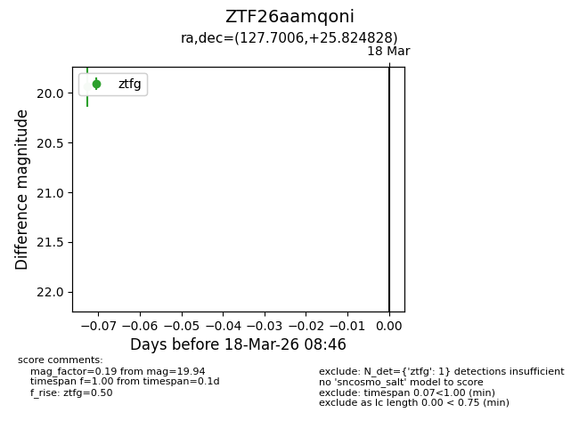
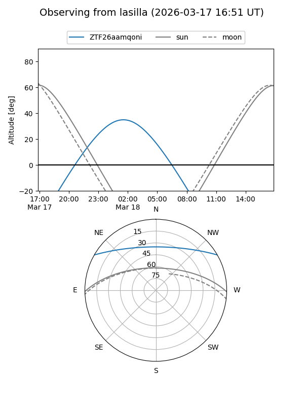
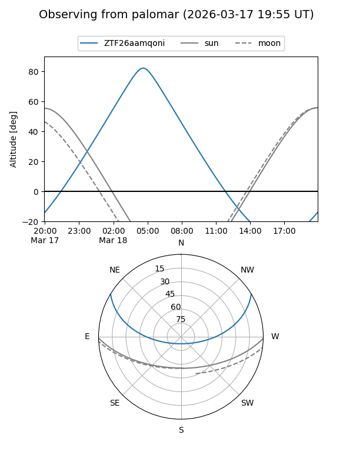

ZTF26aamqoni
Target ZTF26aamqoni at 2026-03-18 08:50
Aliases and brokers:
FINK: link
Lasair: link
ALeRCE: link
alt names
ZTF26aamqoni (ztf,fink_ztf)
Coordinates:
equatorial (ra, dec) = 127.7006,+25.82483
equatorial (HMS+DMS) = 08:30:48.14,+25:49:29.38
galactic (l, b) = (198.1681,+32.35632)
Flags:
Photometry:
last ztfg=19.94
1 ztfg detections
Lightcurve

Visibility


Additional plots